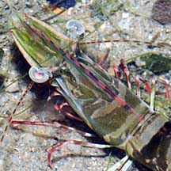
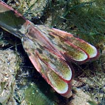
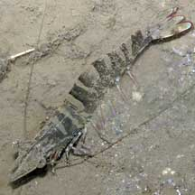
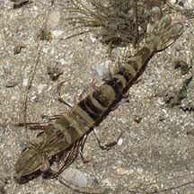

|
|
| shrimps text index | photo index |
| Phylum Arthropoda > Subphylum Crustacea > Class Malacostraca > Order Decapoda > prawns and shrimps > Family Penaeidae |
| Banded
penaeid prawn awaiting identification* Family Penaeidae updated Feb 2020 Where seen? This large banded prawn is often seen on many of our shores. In sandy, silty areas and near seagrasses. It is more active at night and usually seen alone. It is probably quite common but overlooked because it is so well camouflaged. Features: 5-8cm long. Body brown or greenish with dark bands. The tips of its legs and other appendages are often reddish. The Black tiger prawn (Penaeus monodon) as well as other members of the Family Penaeidae may have this appearance. Species are difficult to positively identify without close examination. |
 Changi, Jul 08 |
 |
 |
|
 Kusu Island, Jun 04 |
 Chek Jawa, Jul 05 |
 Chek Jawa, Jun 06 |
*Species are difficult to positively identify without close examination.
On this website, they are grouped by external features for convenience of display.
| Banded penaeid prawns on Singapore shores |
On wildsingapore
flickr
|
| Other sightings on Singapore shores |